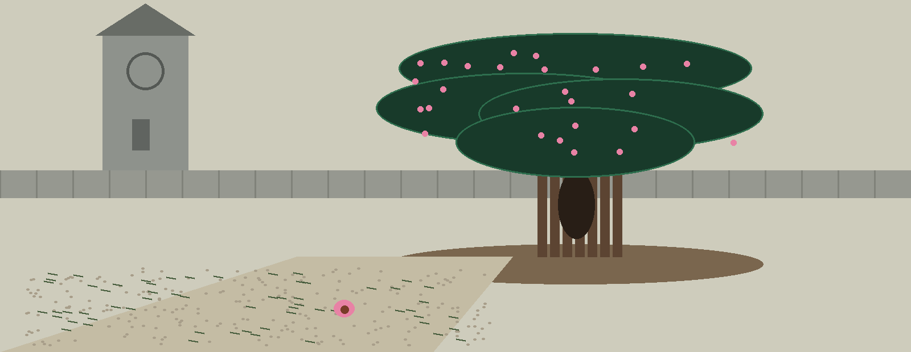
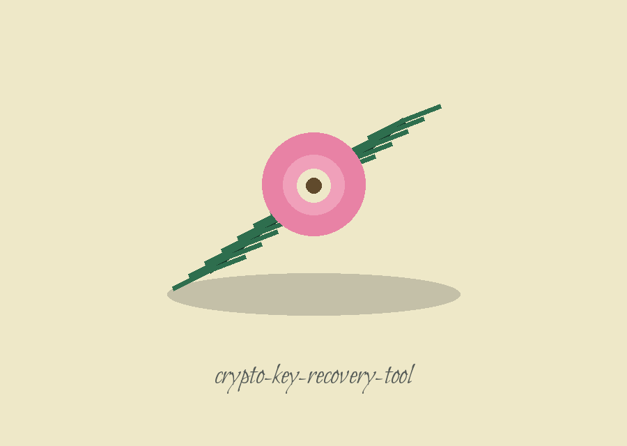

crypto-key-recovery-tool: Ancient Yew Churchyard
Theme: Ancient Yew Churchyard. Headings in Bilbo Swash Caps, running text in Cabin.

A Tag Present Means GCM
Paths That End at a Warning
What Was Recovered, Printed in Full
The implemented work, entered first
Given a password, a salt in hex and an iteration count, a key is derived by PBKDF2 with the SHA256 hash, its length taken from a key length given in bits and halved into bytes by division at the call. With that key a ciphertext file is opened, in AES-CBC where no tag is supplied, with PKCS7 unpadding at the close, or in AES-GCM where a tag in hex is supplied. The presence of the tag alone decides the mode, since no entry anywhere lets a caller name a mode directly.
Paths That End at a Warning
The RSA path prints a warning that it is a placeholder and ends the run at exit 1. The memory dump path prints a warning and does nothing further. The known plaintext path prints a warning and does nothing further. Although the repository headline speaks of recovering keys from memory dumps and corrupted files, this page repeats that headline nowhere as a description of delivered behaviour.
Install line, flagged in place
The README install line is shown as printed in the preserved record below, with a register note recording that the organisation named there is the wrong one and that the right name is ShadowGuard-AI.
Usage line, flagged in place
The README usage line is a placeholder that the parser accepts in no form. Beneath it, the gathered form the parser does accept is written out in full in the facts entry on this page: every value named by kind, and no secret value of any kind written anywhere on the page. The GCM additions are the tag and tag length entries, with the optional associated data entry appended where a tag is in play.
Controls, in parser order
The algorithm entry is required, with its two allowed values AES and RSA and the placeholder standing of the second. The key length entry is in bits and is required where AES is chosen. The memory dump entry is a path whose path leads only to a warning. The ciphertext file entry is a path to the file to be opened. The known plaintext file entry is a path whose pairing leads only to a warning. The password entry holds the words from which the key is derived. The salt entry is hex, without which no derivation begins. The iterations entry is a count whose default is 100000. The initialisation vector entry is hex, without which no opening is attempted after derivation. The tag entry is hex, and its presence selects GCM. The tag length entry is required whenever a tag is present, since GCM refuses to proceed without it. The associated data entry is hex, optional, and is offered to the decryptor before any ciphertext is touched.
Endings, registered
Where derivation fails or an opening fails, the run ends at exit 1. Where a password and salt are missing and a ciphertext file and vector stand alone, the run warns that a key must be found beforehand, performs nothing and ends at exit 1. Where an opening succeeds, the recovered text is printed to the console decoded byte by byte through latin-1, there being no output file control in this program at all. Where the plaintext is empty, that emptiness counts as success, for an empty message opened correctly is not a failure.
Licence, flagged in place
The README licence line stands as printed in the preserved record below, alongside the separate fact that the LICENSE file holds the MIT License text, and the two are left standing side by side without reconciliation.
Record preserved from the README
 # crypto-key-recovery-tool What is implemented: deriving an AES key from a password, a hex salt and an iteration count with PBKDF2, then decrypting a ciphertext file with that key in AES-CBC mode (PKCS7 unpadding) or AES-GCM mode (hex IV, tag and optional AAD). A failed derivation or decryption exits 1. What is not implemented, despite the flags existing: RSA recovery, memory dump processing, and the known plaintext attack. Those paths print a placeholder warning only; the RSA path also exits 1. ## Install `git clone https://github.com/ShadowStrikeHQ/crypto-key-recovery-tool` ## Usage `./crypto-key-recovery-tool [params]` ## Parameters - `-h`: Show help message and exit - `--algorithm`: No description provided - `--key-length`: No description provided - `--memory-dump`: Path to the memory dump file. - `--ciphertext-file`: Path to the ciphertext file. - `--known-plaintext-file`: Path to the known plaintext file for known plaintext attacks. - `--password`: Password to attempt to derive key using PBKDF2 - `--salt`: No description provided - `--iterations`: No description provided - `--iv`: No description provided - `--tag`: No description provided - `--tag-length`: No description provided - `--aad`: No description provided ## License Copyright (c) ShadowStrikeHQ
Facts from the code, stated in the prose
Facts from the code, stated in the prose. This record names: PBKDF2, SHA256, AES-CBC, PKCS7, AES-GCM, 100000, latin-1, exit 1, python3 main.py --algorithm AES --key-length BITS --password TEXT --salt HEX --iterations COUNT --ciphertext-file PATH --iv HEX, --tag HEX, --tag-length NUMBER, --aad HEX. The key length is given in bits and halved into bytes by division at the call. The presence of a tag alone decides the mode, since no entry anywhere lets a caller name a mode directly. A tag length is required whenever a tag is present. Where an opening succeeds, the recovered text is printed to the console decoded byte by byte through latin-1, there being no output file control in this program at all. An empty recovered text counts as success. Every value on this page is named by kind; no secret value of any kind is written anywhere on the page.